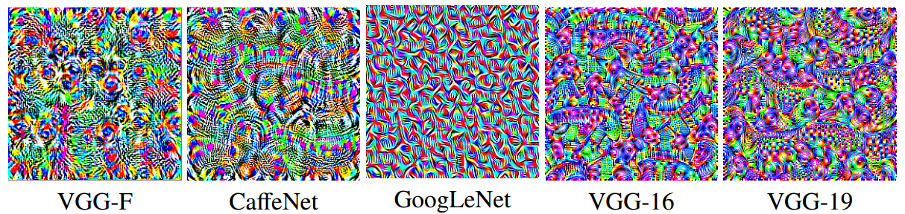

Generalizable Universal Adversarial perturbations
20 Dec 2017Introduction
During my Project Assistance-ship at Video Analytics Lab, IISc, I became fascinated with a very interesting aspect of deep learning. While the models generated from deep learning architectures performed amazingly well in almost all Computer Vision task, giving state-of-the-art performance on many metrics and datasets, they seemed to remain surprising defenseless against small engineered noises in the input. We add an engineered noise the the input, such that the change in the image is imperceptible to the human eye. The changed input has drastically poor predictions, where a classification model may predict a dog for a car, a segmentation model might label all pixels as sofa,etc.
This phenomena in my perspective presents the inherant weakness of our current learning paradigms. On the casual reasoning perspective, it seems that the models are not properly learning the hirarchical features and their combination, which is the general assumption. From a mathematical perspective, It seems to be a functional mapping whose output vary highly with minor changes in input(i.e. unbounded gradients w.r.t. input).
Is all of this just fun-side-projects and minor intricacies of deep learning? In my opinion, it is actually one of the biggest hurdles that the Deep learning “revolution” currently faces. When it comes to deploying a deep learning model for making critical decisions, that fact that such minor noises can drastically change its outcome may just be the deal breaker. Infrasturcture using deep networks might be highly susceptible to such attacks from hackers, where only a small noise has to be injected into the system to cause it to disfunction.
Hence, I decided that it is a crucial and impactful research topic, and took a deep dive into this area. In the next section I will describe what teh work in this paper. Link to code, paper are present in the bottom!
Introduction to Universal Adversarial Perturbations

Many Adversarial attacks algorithms like, FGSM[1], DeepFool[2], etc. have been proposed previously, which generate perturbations for each image, which leads the model to predict wrong information(like class, segmentation etc). While these perturbations are very effective, they generate an image-specific perturbation which is adversarila to that specific image only. A natural question that arises is can there be a global perturbation which can act as adversarial to the network independant of the input image? That is, can we generate a imperceptible perturbation that is adversarial for all(almost) images that are given to the network?
This kind of perturbation is called a Universal Adversarial Perturbation, introduced in [3]. In the paper, they propose a method to generate a Adversarial perturbation from 10.000 Image samples, which leads to spectacular drop in the performance of the model. They show the performance of their Adversarial perturbation on various CNNs for Classification. including big models such as ResNet152 as well as small models such as Caffenet. The metric used is Fooling Rate, which is the % of images for which the labels were changed after adding the pertubation.Their results are listed in Table 1.
The paper establised the existence of Universal Adversarial Perturbations. Now, that the existence is established, a natural progression of reasoning leads to the question that can a UAP be crafted with no use of data? Do we necessarily need 10000 Images?
In the work that preceeds this publication, authors, Mopuri Konda Reddy and Utsav Garg found out that such a perturbation can be crafted even in the absence of data! In a paper titled “Fast-Feature-Fool” [4], they introduced a new algorithm to form UAPs without use of any images. While the fooling rateis lower to the UAP generated by Seyed-Mohsen Moosavi-Dezfooli et al, it shows some other interesting properties, such as being trasferable across dataset, being magnitudes faster to generate etc.
The paper I worked on is a Journal extension of this work. While Journals generally do not contain substantial amount of additional work than a published conference paper(personal opinion), this work has substantial addition which make “fast-feature-fool” a much more competetive algorithm, and enable advarsarial generation on any task,from Classification to Depth Estimation.
Tha major Contributions of this work are:
1) Significant enhancement in the algorithm, leading to better performing UAPs.
2) Introducing the concept of using data priors for generating UAPs, which makes the UAP as strong as the ones introduced in [3].
3) Show the generalizability of the algorithm proposed, by showing evidence of ‘Fooling’ on various tasks like Classification, Semantic Segmentation, and depth estimation.
Results
Here we present some numbers from the paper, which should intrigue you enough to have a look at the paper itself:
Add table for classification
Add table for Segmentation and Depth Estimation.
References
[1] : Explaining and harnessing adversarial examples; Ian J. Goodfellow, Jonathon Shlens, and Christian Szegedy.
[2] : DeepFool: a simple and accurate method to fool deep neural networks; Seyed-Mohsen Moosavi-Dezfooli, Alhussein Fawzi, Pascal Frossard.
[3] : Universal adversarial perturbations; Seyed-Mohsen Moosavi-Dezfooli, Alhussein Fawzi, Omar Fawzi, Pascal Frossard.
[4] : Fast Feature Fool: A data independent approach to universal adversarial perturbations; Konda Reddy Mopuri, Utsav Garg, R. Venkatesh Babu
Links
The code for this paper has been written in python on Pytorch as well as Tensorflow.You can,